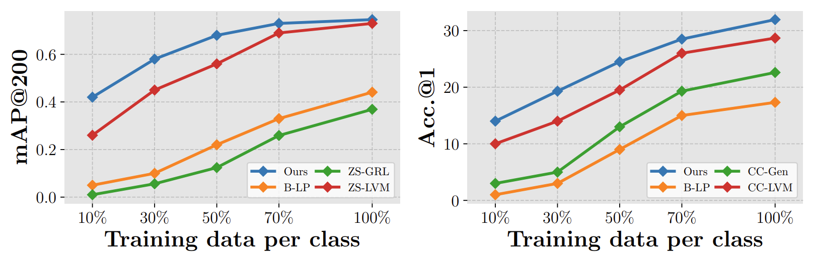
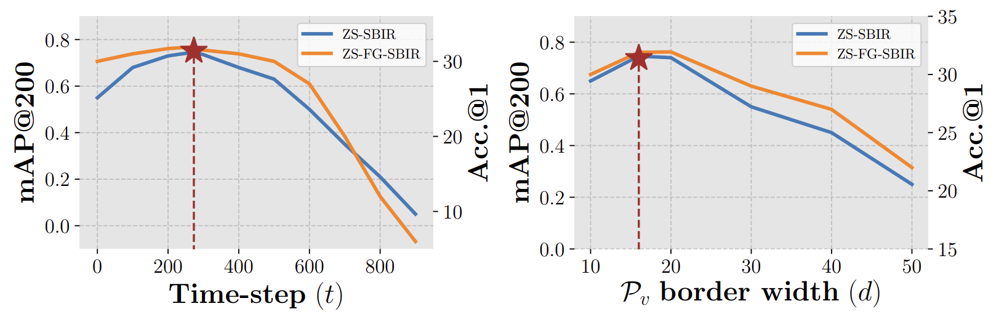

Abstract
This paper, for the first time, explores text-to-image diffusion models for Zero-Shot Sketch-based
Image Retrieval (ZS-SBIR). We highlight a pivotal discovery: the capacity of text-to-image diffusion
models to seamlessly bridge the gap between sketches and photos. This proficiency is underpinned by
their robust cross-modal capabilities and shape bias, findings that are substantiated through our
pilot studies. In order to harness pre-trained diffusion models effectively, we introduce a
straightforward yet powerful strategy focused on two key aspects: selecting optimal feature layers
and utilising visual and textual prompts. For the former, we identify which layers are most enriched
with information and are best suited for the specific retrieval requirements (category-level or
fine-grained). Then we employ visual and textual prompts to guide the model's feature extraction
process, enabling it to generate more discriminative and contextually relevant cross-modal
representations. Extensive experiments on several benchmark datasets validate significant
performance improvements.
Diffusion Feature Extraction
Feature extraction via text-to-image diffusion model.
Architecture
Given the frozen Stabel Diffusion backbone feature extractor, our method learns a single textual prompt, and sketch/photo-specific visual prompts via triplet loss.
Results
PCA representation of Stabvel Diffusion internal features from upsampling layers of
UNet for different time-steps. Different regions of sketch and photo feature maps
from [200, 300] (highlighted in red) portray strong semantic
feature correspondence (represented by the same colours in the PCA map), while the
features from the later time-steps are non-aligned.

Plots showing low-data scenario performance for ZS-SBIR (left) and ZS-FG-SBIR
(right) setup on Sketchy dataset.

Quantitative results on Sketchy for ZS-SBIR (mAP@200) and ZS-FG-SBIR
(Acc.@1) setup for different denoising time-steps (left) and visual prompt
border width (right).
Quantitative results on Sketchy for ZS-SBIR (mAP@200) and ZS-FG-SBIR
(Acc.@1) setup for different denoising time-steps (left) and visual prompt
border width (right).
BibTeX
@inproceedings{koley2024text,
title={{Text-to-Image Diffusion Models are Great Sketch-Photo Matchmakers}},
author={Koley, Subhadeep and Bhunia, Ayan Kumar and Sain, Aneeshan and Chowdhury, Pinaki Nath and Xiang, Tao and Song, Yi-Zhe},
booktitle={CVPR},
year={2024}
} 
Copyright: CC BY-NC-SA 4.0 © Subhadeep Koley | Last updated: 05 April 2024 | Good artists copy, great artists steal.